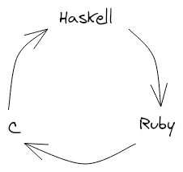

Understanding quine-central: how do quine loops work?
Yesterday another Recurser introduced me to
quine-central, which is:
[A] Haskell program that generates a Haskell program that prints out a Perl program that prints out a Python program that prints out a Ruby program that prints out a C program that prints out a Java program that prints out a Rust program that prints out an OCaml program that prints out a Swift program that prints out a Racket program that prints out a Javascript program that prints out the first Haskell program generated.
“How the hell does that work?” I thought to myself. Maybe you’re thinking that too, so here’s my attempt at an explanation.
quine-central can produce quine loops of any length, so
let’s first think about a loop of three programming languages:
Haskell, Ruby, and C. In this case, quine-central prints
a Haskell program that prints a Ruby program that prints a C program
that prints the first Haskell program generated.

The generated Haskell program has two lines. The first line defines a
function called q that takes three arguments.
q builds and returns a string that contains its first
argument, then a newline, and finally some Ruby code that calls a
function called q. This call to q in Ruby
takes the same arguments but rotated one position to the left. That
is, it takes the second argument to the Haskell q, then
the third, then the first.

In the actual output, {a0} is replaced with the value of
a0. Same goes for the other variables. Also, this isn’t
quite the actual code. I simplified it a little for demonstration
purposes.
The generated Haskell program's second line is a main method that
calls the function q defined on the first line and prints
the result. Each argument passed to q is the source code
for a definition of q in a language in the loop. The
first argument is a definition of q in Ruby, the second
in C, the last in Haskell.
main = putStrLn $ q "{Ruby definition of q}"
"{C definition of q}"
"{Haskell definition of q}"
In all of these definitions, q does the same thing as it
does in the Haskell program. It prints its first argument, then prints
a call to a function called q, but in the next language
in the loop. It also rotates its arguments one position to the left
before printing them.
When the program is run, q starts by printing its first
argument, which is a declaration of q in Ruby. Then, it
prints a call to q in Ruby. The arguments to this call
are the second, third, and first arguments passed to q in
the Haskell program, which are definitions of q in C,
Haskell, and Ruby respectively.
The output of the Haskell program is a Ruby program with a very
similar structure. Both have two lines. Both declare a function
q on the first line. q does the same thing
in both programs. And both call q on the second line,
passing in definitions of q for the rest of the loop.
When this Ruby program is run, it in turn prints a C program with the same structure. And that C program in turn prints a Haskell program with the same structure. In fact, it prints the original Haskell program, closing the loop.
In the next post, I’ll discuss how
quine-central generates these programs in the first
place. We’ll also do away with some of the simplifications I made to
the programs in this post and look at how
quine-central handles the problems posed by string
escaping.